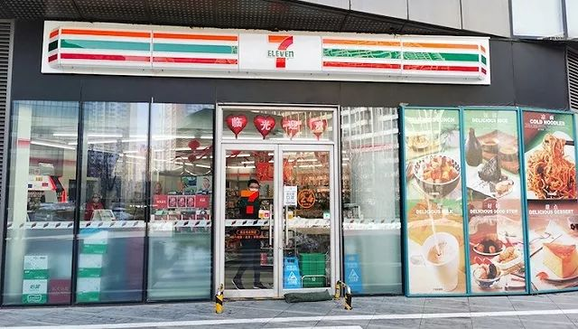

房企复工再推迟，开发商急谋应对之道
原文链接 备份链接 房企高管们普遍认为，调整税收与限购政策，是对自己立竿见影的帮助 文 | 《财经》记者 王博 实习生 郭明骏 编辑 | 马克 2月9日，部分头部房企再次宣布延长复工时间，截至发稿前，正荣、融创、龙湖、滨江等房企将复工时 …

北京远洋未来汇7-11店。图片来自赵晓娟
记者：赵晓娟 编辑：昝慧昉
“
复工率不足、复工员工减少外出等因素，都影响了交易量。
”
节后上班第一天，依赖写字楼员工消费的便利店生意依然很冷清。
2月10日11点40分至12点30分，界面新闻走访了位于东四环写字楼群远洋天地商务楼的3家便利店，包括7-Eleven、便利店、全时便利，看到并没有看到排长队的迹象。
位于远洋未来汇附近的7-Eleven便利店在12点时人并不多，门上写有“进店需佩戴口罩“的字样，货架上的熟食、烘焙品、水果等零散摆放，显得伙计并不充足，陈列包子的食品架上只剩荠菜、酱肉等少数品种，平时用来摆放热餐的柜子则没有启用。
一名前来购买酸奶的顾客称，以往正常上班的午高峰时间7-Eleven总是人满为患，去晚了很多盒饭都会卖空，但附近的写字楼眼下很多都还未开工，结账时不用排队。
 7-Eleven热食货架
7-Eleven热食货架
与7-Eleven相隔一个天桥的便利蜂也是差不多的情况。除了关闭热食柜之外，便利蜂的货架上陈列的商品看起来更丰富些，盒饭、三明治等均有提供。该店店员对界面新闻表示，受疫情影响、加上写字楼工作人员还没有完全复工，每天只能提供少量现制热餐，且会迅速售罄。
 便利蜂货架。图片来自赵晓娟
便利蜂货架。图片来自赵晓娟
而附近的一家全时便利自春节前1月24日闭店至今、尚未开业。
招聘网站智联招聘2月1日发布的《2020年春节企业复工情况调研报告》显示，北京、上海、广州、深圳四个一线城市中，上海69%企业选择在2月10日当日复工；北京市一半企业选择在2月3日当日复工，29%选择在2月10日当日复工；广东省超过一半（52%）企业选择在2月10日当日复工。
7-Eleven一名内部员工向界面新闻透露，北京的门店春节期间85%正常营业，有部分因物业关闭等原因停业。
便利蜂方面则表示，此次疫情导致多个城市复工推迟，对写字楼周边门店的影响体现在近几天，春节假期的情况与往年相比变化不大。复工后，由于多数餐厅、面包店、咖啡厅仍未营业，预计热餐、面包、咖啡等需求旺盛。目前便利蜂大部分商品供应充足，可满足顾客所需。
当下在疫情防控期间，便利蜂按最高卫生标准进行全面防护。提高了门店全面清洁频次，要求所有顾客能接触到的地方都必须用消毒液多次清洁，门店还设置了免洗洗手液供顾客使用。此外，店员、骑手等一线人员须全部建立健康档案，每日测量体温正常后才能上岗。为了减少顾客排队聚集，便利蜂提倡顾客在其APP、小程序等多个入口选择其正在推广的“无接触配送”服务。
未经授权 禁止转载

原文链接 备份链接 房企高管们普遍认为，调整税收与限购政策，是对自己立竿见影的帮助 文 | 《财经》记者 王博 实习生 郭明骏 编辑 | 马克 2月9日，部分头部房企再次宣布延长复工时间，截至发稿前，正荣、融创、龙湖、滨江等房企将复工时 …
原文链接 备份链接 _ 2月10日这个周一，中国多个省市迎来了春节后第一个工作日，虽然比原定假期已推迟一周，但政府、企业和个人所面临的疫情防控压力都不小。当前，湖北省仍需要着力抓好疫情防控，其他地区也需要做好防控的同时有序恢复生产 _ …
原文链接 备份链接 _ “不知道那些曾经一起抢出站闸机的人，现在正在遭遇什么？只希望这场疫情早点儿过去。” _ 文 |《财经》记者 王丽娜 袁满 编辑 | 朱弢 疫情之下，每个人的生活都有变化。即便是距离疫情爆发中心武汉千里之外的北京。 …
原文链接 备份链接 【财新网】（记者 张兰太 整理）新冠疫情来势汹汹，全国各地严阵以待，在中央统一部署之外，地方层层加码、各出奇招，有力推动了疫情的群防群控，不过一些地方的个别管控措施却失之过度、走了极端。随着年后开始复产复工，各级政 …
原文链接 备份链接 经济观察报 记者 种昂 2月4日，一批5万只口罩由一辆货车缓缓运进了江苏某汽车配件工厂的大门，刘天元总算松了一口气。作为这家民企高管兼内部疫情防控的副总指挥，他肩负着企业复工的重担。此时，刘天元似乎看到了复工的希望。 …